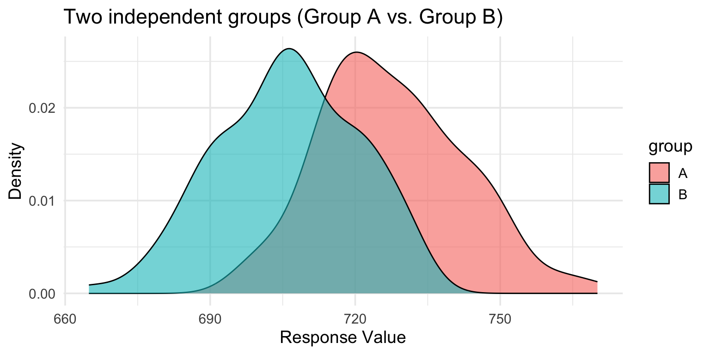
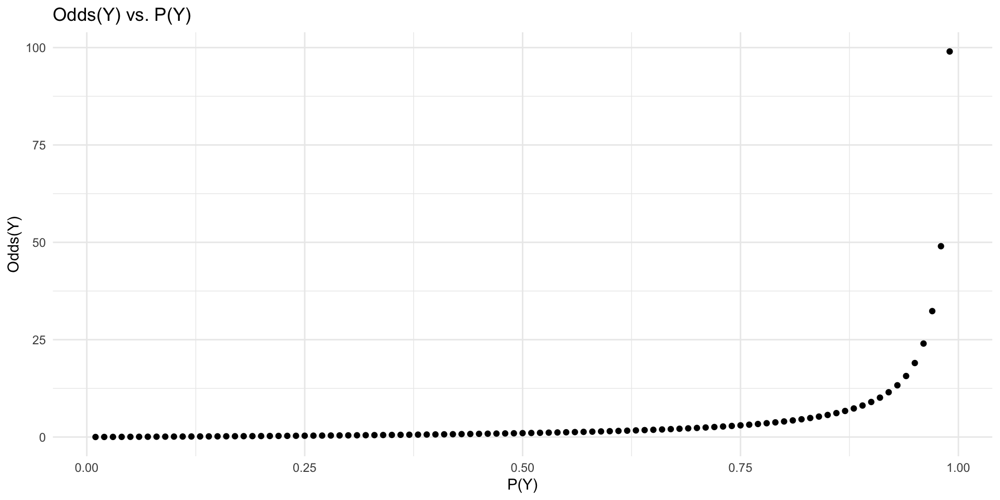

Classification: dealing with categorical outcomes.
Logistic regression.
Why not linear regression?
Generalized linear models (GLMs).
Odds and log-odds.
The logistic function.
Building and interpreting logistic models with glm.
What is classification?
“To classify is human…We sort dirty dishes from clean, white laundry from colorfast, important email to be answered from e-junk…. Any part of the home, school, or workplace reveals some such system of classification.”
— Bowker & Star, 2000
Classification = predicting a categorical response variable using features
Common examples:
Is an email spam or not spam?
Is a cell mass cancerous or not cancerous?
Will this customer buy or not buy?
Is a credit card transaction fraudulent?
Is this image a cat, dog, person, or other?
Binary vs. multi-class classification
Binary classification: sorting inputs into one of two labels
Today: focus on binary classification with logistic regression
Part 1: Foundations of logistic regression
Motivation, log-odds, and the logistic function.
Example dataset: Email spam
### Loading the tidyverselibrary(tidyverse)df_spam =read_csv("https://raw.githubusercontent.com/seantrott/ucsd_css211_datasets/main/main/logistic/spam.csv")nrow(df_spam)
[1] 3921
Why not linear regression?
spam is coded as 0 (no) or 1 (yes)
Could we treat this as continuous and use linear regression?
Interpret prediction \(\hat{y}\) as probability of outcome?
💭 Check-in
What issues might arise here?
The problem: predictions beyond [0,1]
ggplot(df_spam, aes(x = num_char, y = spam)) +geom_point(alpha =0.3) +geom_smooth(method ="lm", se =FALSE) +labs(x ="Number of characters",y ="Spam (0 = no, 1 = yes)") +theme_minimal()

Linear model generates predictions outside [0,1], but probability must be bounded!
Framing the problem probabilistically
Treat each outcome as Bernoulli trials: “success” (spam) vs. “failure” (not spam)
Each observation has independent probability of success: \(p\)
On its own: \(p\) = proportion of spam emails
Goal: model \(p\) conditioned on other variables, i.e., \(P(Y = 1 | X)\)
Question: What does \(p\) on its own remind you of from linear regression?
Answer: The intercept-only model (the mean of \(Y\))
Generalized linear models (GLMs)
Generalized linear models (GLMs) are generalizations of linear regression.
Each GLM has:
A probability distribution for the outcome variable
A linear model: \(\beta_0 + \beta_1 X_1 + ... + \beta_k X_k\)
A link function relating the linear model to the outcome
We need a function that links our linear model to a probability score bounded at [0, 1].
Takes a value between \([0, 1]\) and maps it to \((-\infty, \infty)\)
Also called the log-odds
Introducing the odds
The odds of an event are the ratio of the probability of an event occuring (\(p\)) and the probability of event not occurring (\(1-p\)).
\[\text{Odds}(Y) = \frac{p}{1-p}\]
Unlike \(p\), odds are bounded at \([0, \infty)\)
Odds of 1 means 50/50 chance
Odds > 1 means more likely to occur than not
Odds < 1 means less likely to occur than not
Visualizing odds
p <-seq(0.01, 0.99, 0.01)odds <- p / (1- p)ggplot(data.frame(p, odds), aes(x = p, y = odds)) +geom_point() +labs(x ="P(Y)", y ="Odds(Y)", title ="Odds(Y) vs. P(Y)") +theme_minimal()

Introducing the log-odds (logit)
The log-odds is the log of the odds (the logit function).